One change, start to finish, with the buttons to press. Screenshots are from GitHub’s own guide; some were taken on a Mac, and the buttons are in the same places on Windows.
main.File › Options › Accounts: sign in to GitHub. File › Options › Integrations: set External editor to the one you use (IntelliJ IDEA or VS Code). After that, Repository › Open in… opens the project in it.
On the project’s GitHub page, click Code › Open with GitHub Desktop. In the window that opens, pick a Local Path you’ll find again, like Documents\GitHub, then Clone.
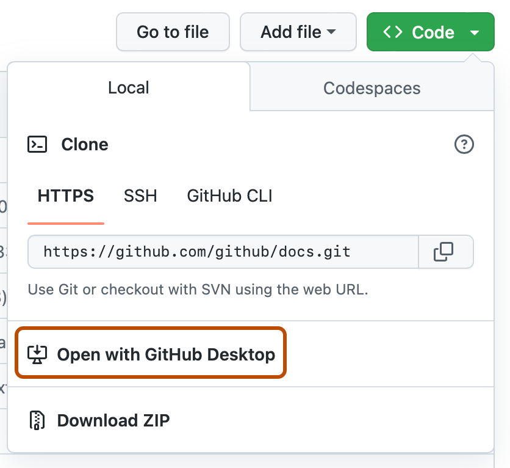
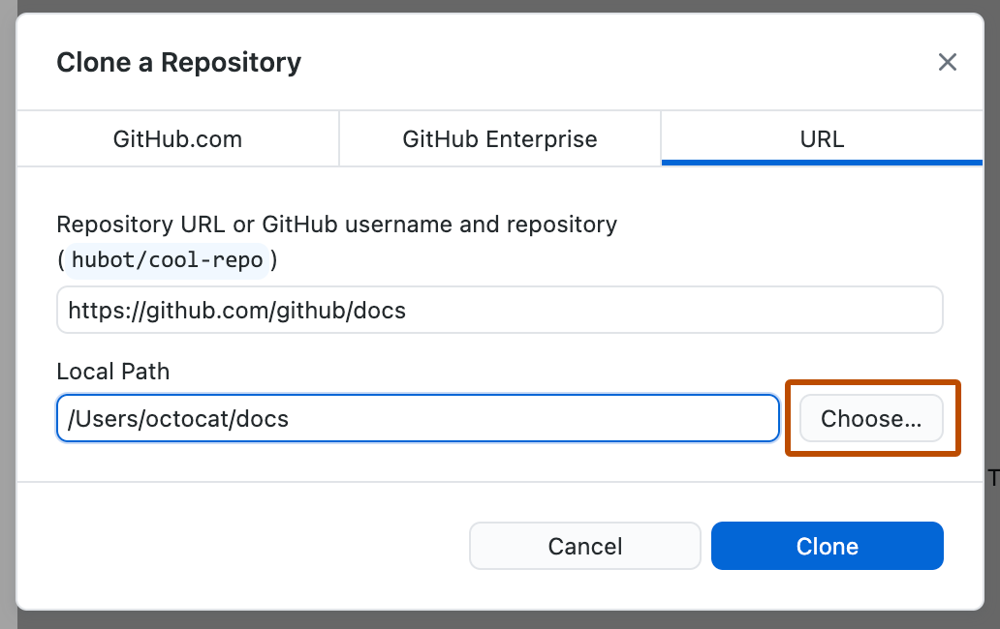
Switch to main (see step 3), click Fetch origin. If others pushed, the button turns into Pull origin: click it.
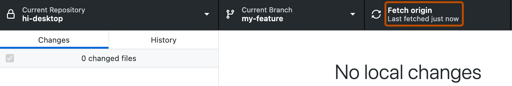
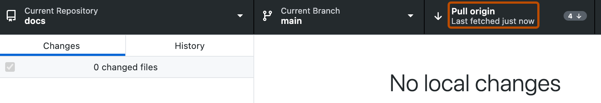
Click Current Branch, then New Branch. Name it for the change, like lock-wheels, and create it from main. The same list switches between branches.
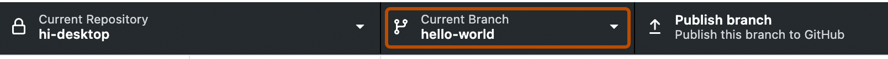
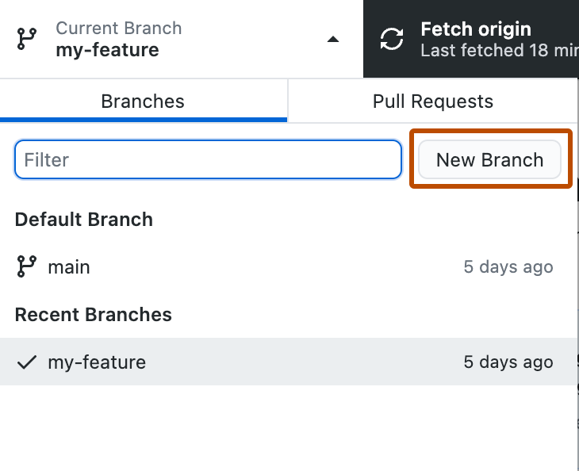
Edit and test in your editor. Back in GitHub Desktop, the Changes tab lists every changed file; click one to see exactly what changed. Leave ticked the files you mean to commit. Type a Summary, then click Commit to your-branch. (You can ignore the Copilot button.)
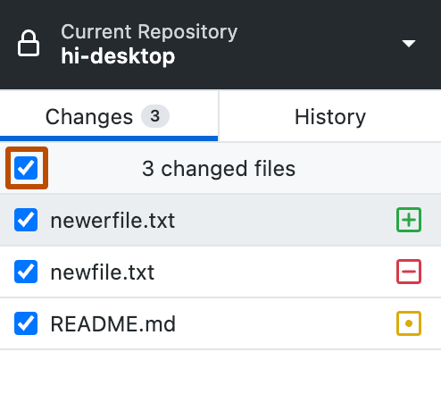
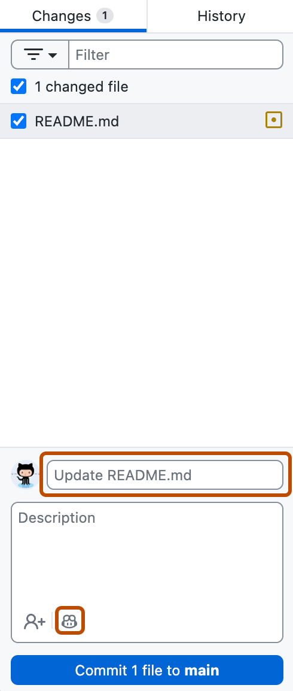
A new branch shows Publish branch; after that the same spot shows Push origin whenever you have commits to send.
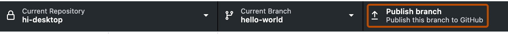
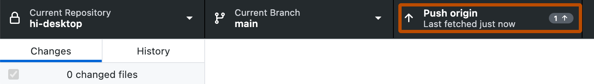
Click Preview Pull Request (or Branch › Create Pull Request). Check the base is main, then create it. GitHub opens in your browser: write what you changed and why, and wait for review and the green check.
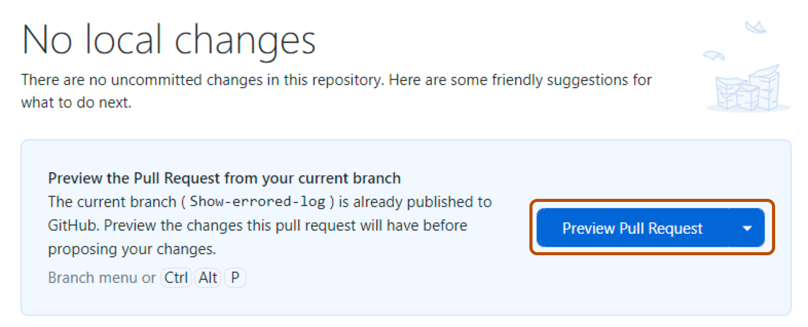
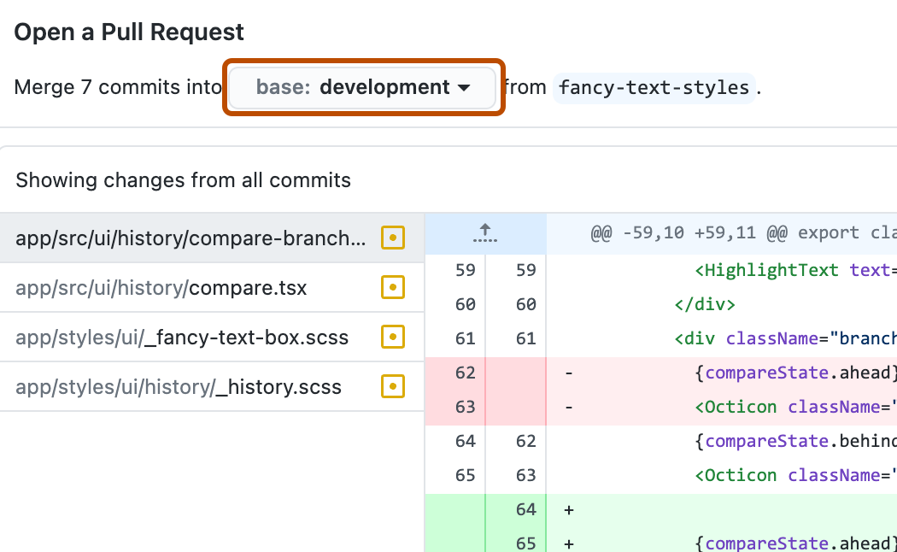
Current Branch › Choose a branch to merge into your-branch, pick main, merge, test, push.
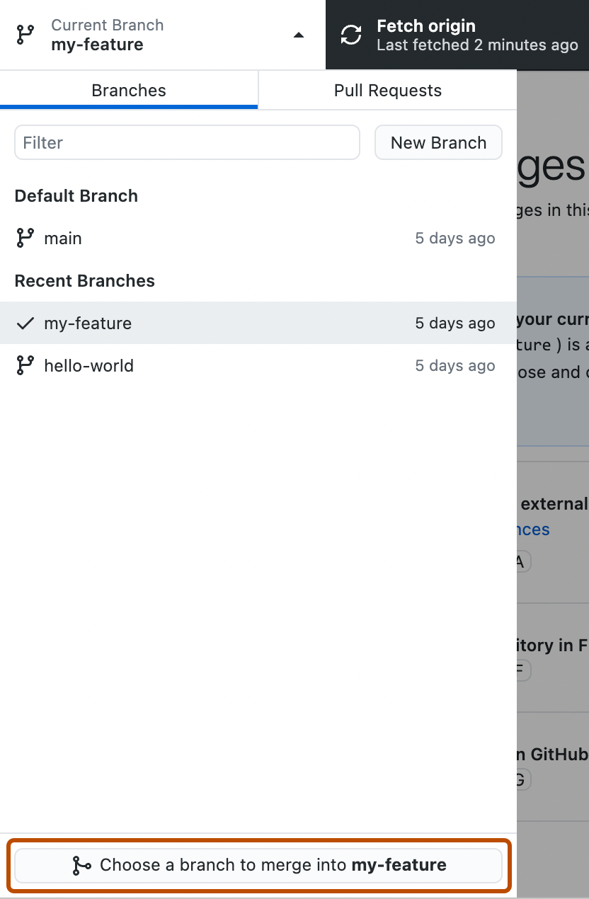
Right-click files in Changes, then Discard Changes. They’re gone for good, so be sure.
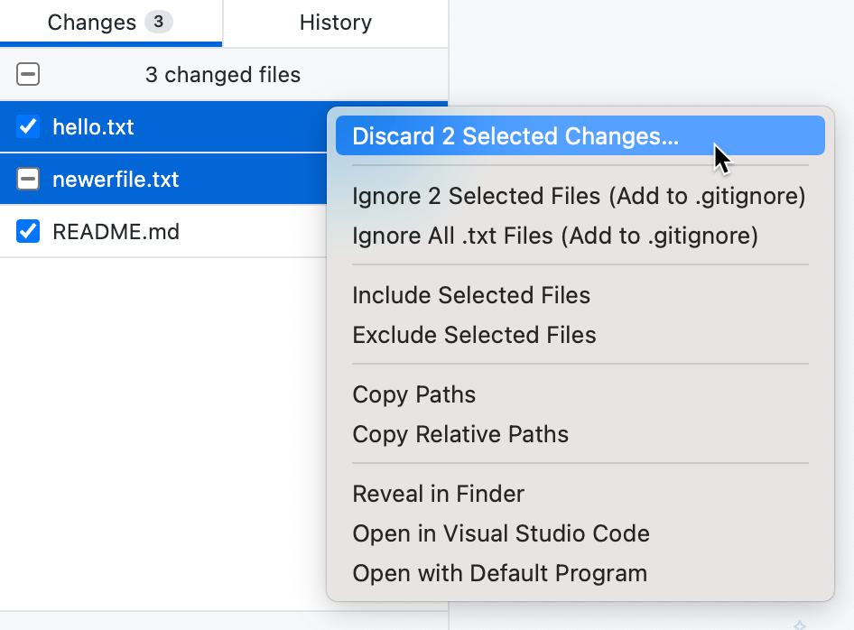
History tab, right-click the commit, Revert Changes in Commit. That makes a new commit that undoes it, then push.
GitHub Desktop asks what to do with your changes: Leave my changes keeps them parked on this branch (a “stash”); Bring my changes takes them along.
Two people changed the same lines. Open the file in your editor, keep the right version between the <<<<<<< and >>>>>>> markers, delete the markers, then commit. Ask a mentor the first time.
Repository › Show in Explorer opens the folder.